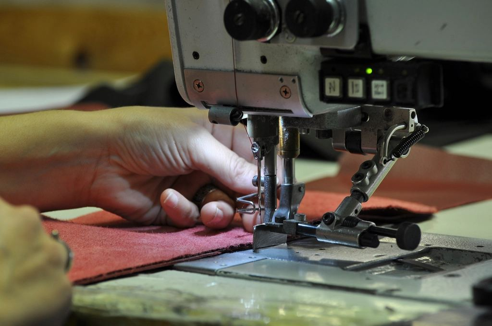
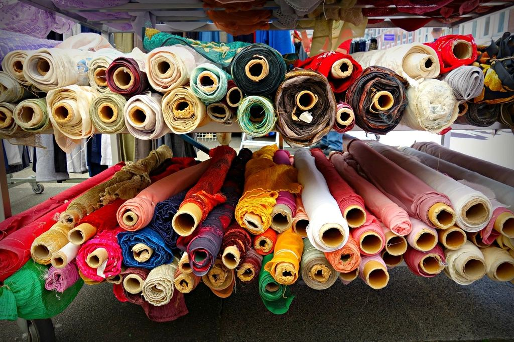
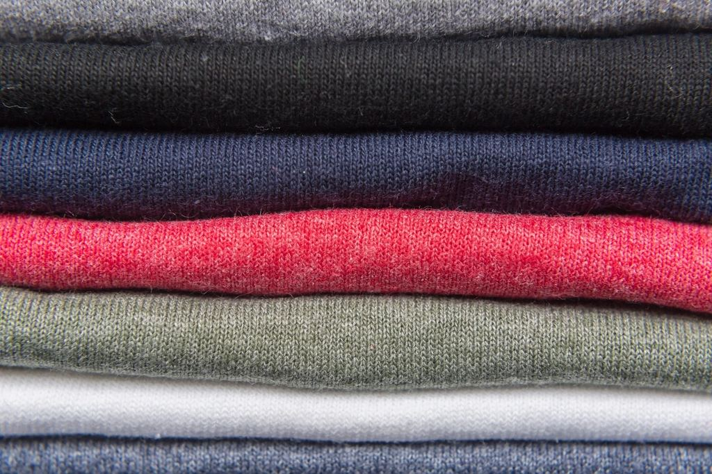
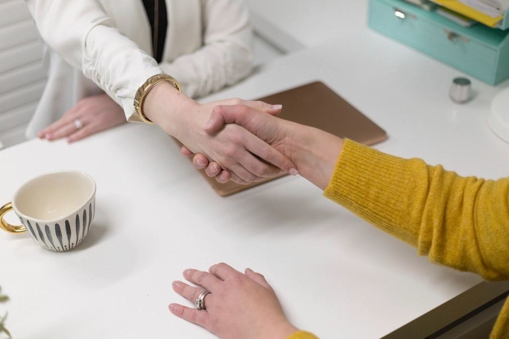
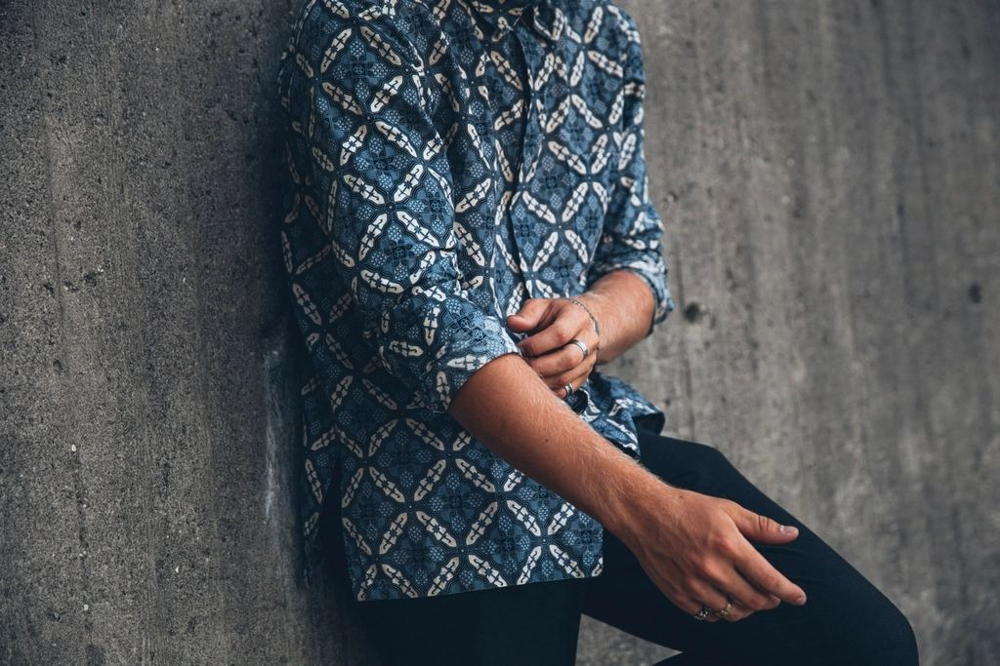
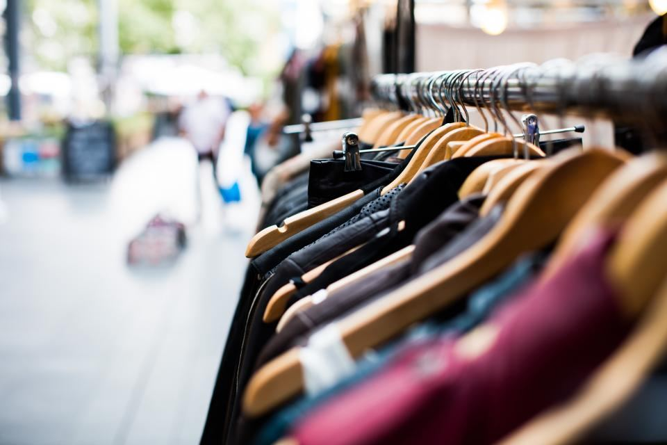
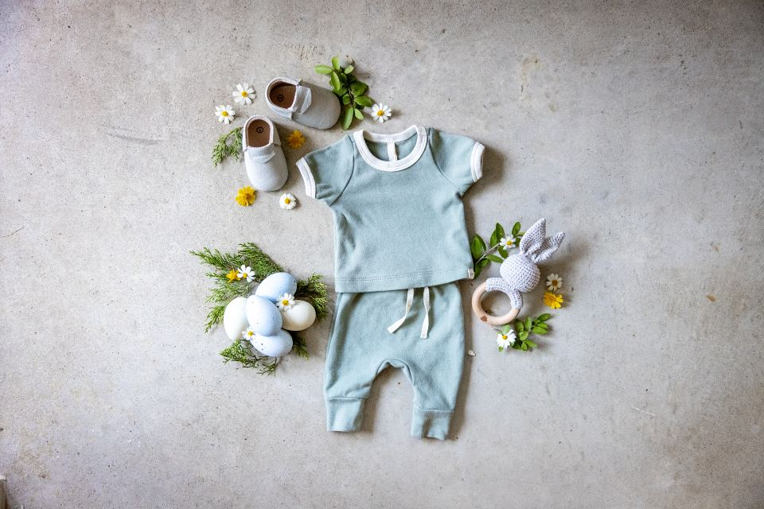
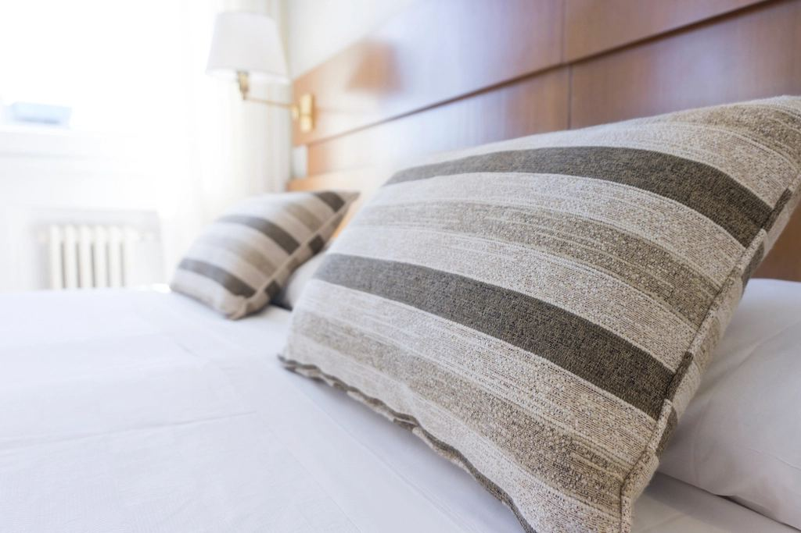

Supplier identification
We match every enquiry with factories that genuinely run that product, capacity and price level, instead of pushing one unit for everything.

Apparel sourcing & buying house · Dhaka
Sabiha Tex & Apparels is a Dhaka-based buying house. We find the right factory for your order, develop your samples, follow the production line every day and ship your goods with the documents in order.
Who we are
Buying from Bangladesh works when somebody is in the factory every week — checking fabric, measuring samples and pushing the schedule. That is the job we do for you.
We are a textile and apparel sourcing house based at Darus Salam, Dhaka, with a branch office in Munshiganj. We work with knit, woven, denim, sweater and home-textile units, and we choose the unit to suit your product, quantity and compliance requirements — not the other way round.



What we do
From the first enquiry to the shipping documents, every step of your order is handled and reported by one team.
We match every enquiry with factories that genuinely run that product, capacity and price level, instead of pushing one unit for everything.
Proto, fit, size set and salesman samples, lab dips, strike-offs and trim cards — followed up until your approval.
Item-wise costing on fabric, trims, CM and finishing so you can see what you pay for, and negotiation on your behalf.
Daily contact with merchandisers and production managers, with a written status so you know where every style stands.
Pre-production meetings, inline checks and final random inspection to your AQL, with photo reports.
We arrange factory audits and paperwork for the social and technical standards your buyer or brand requires.
Product range
Knit and woven apparel for the whole family, plus home textiles and fabric. Tell us the product and we will tell you which of our units builds it best.

T-shirts, polos, shirts, denim, chinos, knitwear and outerwear.

Tops, blouses, dresses, skirts, denim, knitwear and loungewear.

Baby sets, t-shirts, dresses, school wear, knitwear and outerwear.

Bed linen, towels, cushion covers, woven and knit fabric, yarn and trims.
How we work
A straight line of seven steps. You are told where your order stands at each one.
You send a sketch, tech pack, sample or a reference photo with your target quantity and delivery window.
We shortlist units that actually run your product type — knit, woven, denim, sweater or home textile — and that meet the audit standards your brand asks for.
Fabric and trim sourcing, proto, fit and salesman samples, lab dips and strike-offs, revised until the sample is approved.
A transparent, item-wise costing. Once you approve, we place the order and confirm the production schedule with the factory.
We stay on the floor: fabric in-house, cutting, sewing lines, washing and finishing, with regular updates and photos to you.
Pre-production, inline and final random inspections against your approved sample and AQL, plus measurement and packing checks.
Booking with your nominated forwarder, carton marking, and the export documents your bank or customs broker needs.
Quality & compliance
Quality control is the part of sourcing that cannot be done by email. Our team measures, counts and opens cartons at the factory.

Questions
We work on the buyer's side. You tell us what you want made; we find the right factory, develop the samples, negotiate the price, watch production on the floor, inspect the goods and get them shipped. You deal with one office in Dhaka instead of chasing several factories.
Knit and woven garments for men, women and kids — t-shirts, polos, shirts, jeans and denim, chinos, shorts, sweatshirts, sweaters and outerwear — plus home textiles such as bed linen, and woven and knit fabrics.
Yes. Quantities, fabric and finishing decide which factory fits, so send your details and we will tell you honestly whether we can place the order well.
Send a tech pack, sketch, photo or physical sample with your target quantity, fabric and delivery date to smtsajib25@gmail.com or message us on WhatsApp. We reply with factory options and a sample plan.
Yes. Tell us which audits and standards you need the factory to hold — for example BSCI, Sedex, WRAP, OEKO-TEX or GOTS — and we shortlist units accordingly and share their current certificates.
Our own team inspects at the factory: pre-production, during the sewing run and a final random inspection against the approved sample and your AQL, with a written and photo report before the goods leave.
Send us your tech pack, sketch or sample reference. We will come back with factory options, a sample plan and a costing.